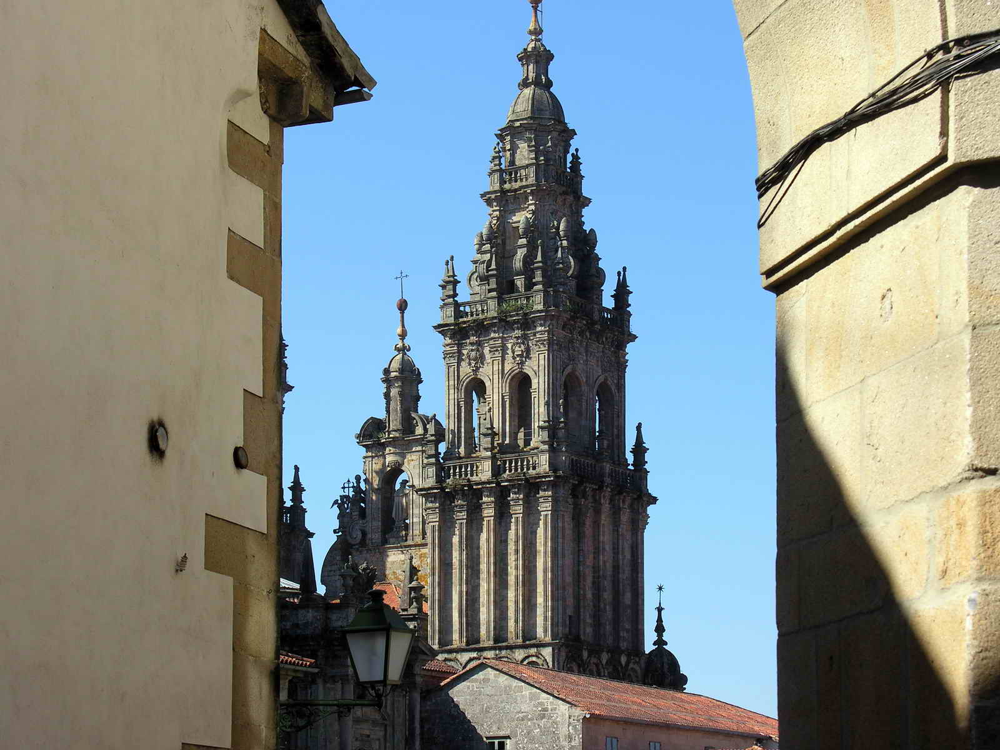
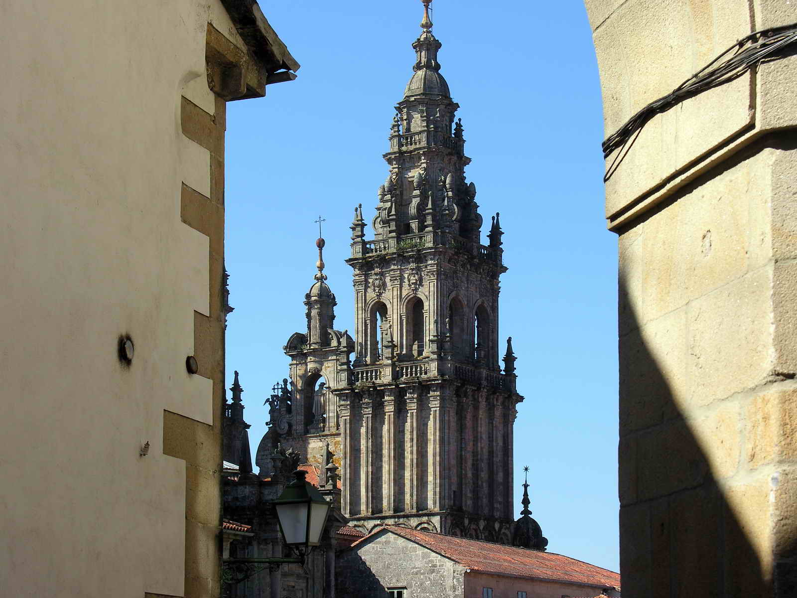

Santiago de Compostela
Descubre la ciudad santa del Apóstol Santiago, Patrimonio de la Humanidad y destino de peregrinos desde hace siglos.
 

Orígenes
La historia de Santiago de Compostela está íntimamente ligada al descubrimiento de la tumba del Apóstol Santiago en el siglo IX. Este hallazgo transformó un pequeño asentamiento en uno de los principales centros de peregrinación de la cristiandad.
Edad Media
Durante la Edad Media, Santiago se convirtió en un importante centro religioso y cultural. La construcción de la catedral comenzó en 1075, atrayendo a peregrinos de toda Europa a través de las diferentes rutas del Camino de Santiago.
Actualidad
Hoy, Santiago es una ciudad universitaria vibrante que combina su rico patrimonio histórico con una vida cultural moderna y dinámica.
La Catedral
La Catedral de Santiago, obra maestra del arte románico, es el destino final del Camino de Santiago.

El Pórtico de la Gloria
Esta obra maestra del románico, creada por el Maestro Mateo, representa el Apocalipsis y da la bienvenida a los peregrinos desde el siglo XII.
El Botafumeiro
El famoso incensario gigante que sobrevuela las naves de la catedral es uno de los símbolos más reconocibles de Santiago.
La Cripta
Bajo el altar mayor se encuentra la cripta que alberga los restos del Apóstol Santiago.
El Camino de Santiago
Una red de rutas milenarias que conducen a la tumba del Apóstol Santiago.
Rutas Principales
El Camino Francés, el Portugués y el del Norte son algunas de las rutas más populares que llevan a Santiago.
Albergues
La red de albergues proporciona alojamiento económico a los peregrinos durante su viaje.
Consejos
Preparación física, equipo adecuado y credencial del peregrino son esenciales para realizar el Camino.
Gastronomía
La cocina gallega es famosa por sus productos frescos y preparaciones tradicionales.
Tapas
Las calles del casco antiguo están llenas de bares donde degustar pinchos y tapas tradicionales.
Mariscos
El pulpo á feira, las vieiras y los mejillones son protagonistas de la gastronomía local.
Postres
La tarta de Santiago, con su característica cruz, es el postre más emblemático de la ciudad.